Plots (2)
NOTE: This page has been revised for Winter 2024, but may undergo further edits.
1 Introduction
As was shown in Plots (1), there is a wide variety of plots available
in the base R {graphics} package, that are also possible in
{ggplot2}, which permits elaboration well beyond what’s
available in base R. In addition, there is a growing number of
extensions of {ggplot2} itself: [https://exts.ggplot2.tidyverse.org],
see the Gallery.
This topic illustrates a few more {ggplot2} examples,
and then goes on to describe the development of “Hovmöller” diagram, or
time-space diagrams for surface air temperature. While rather
specialized (there are only a few published functions for constructing
them in one go), the steps in their construction are typical of the data
preparation/visualization necessary for making non-standard
visualizations.
2 More examples
To begin, load the libraries, and some of the data that will be used here:
## Linking to GEOS 3.11.0, GDAL 3.5.3, PROJ 9.1.0; sf_use_s2() is TRUE## Loading required package: abind… and the data:
# load data from a saved .RData file
con <- url("https://pages.uoregon.edu/bartlein/RESS/RData/geog490.RData")
load(file=con)Also extract a world map from the {maps} package to use
as a basemap:
## Simple feature collection with 253 features and 1 field
## Geometry type: MULTIPOLYGON
## Dimension: XY
## Bounding box: xmin: -180 ymin: -85.19218 xmax: 190.2708 ymax: 83.59961
## Geodetic CRS: +proj=longlat +ellps=clrk66 +no_defs +type=crs
## First 10 features:
## ID geom
## Aruba Aruba MULTIPOLYGON (((-69.89912 1...
## Afghanistan Afghanistan MULTIPOLYGON (((74.89131 37...
## Angola Angola MULTIPOLYGON (((23.9665 -10...
## Anguilla Anguilla MULTIPOLYGON (((-63.00122 1...
## Albania Albania MULTIPOLYGON (((20.06396 42...
## Finland Finland MULTIPOLYGON (((20.61133 60...
## Andorra Andorra MULTIPOLYGON (((1.706055 42...
## United Arab Emirates United Arab Emirates MULTIPOLYGON (((53.92783 24...
## Argentina Argentina MULTIPOLYGON (((-64.54916 -...
## Armenia Armenia MULTIPOLYGON (((45.55235 40...
Here’s a {ggplot2} plot of the outlines
# ggplot map of world_outline
ggplot() +
geom_sf(data = world_otl_sf, fill = NA, col = "black") +
scale_x_continuous(breaks = seq(-180, 180, by = 30)) +
scale_y_continuous(breaks = seq(-90, 90, by = 30)) +
coord_sf(xlim = c(-180, +180), ylim = c(-90, 90), expand = FALSE) +
theme_bw()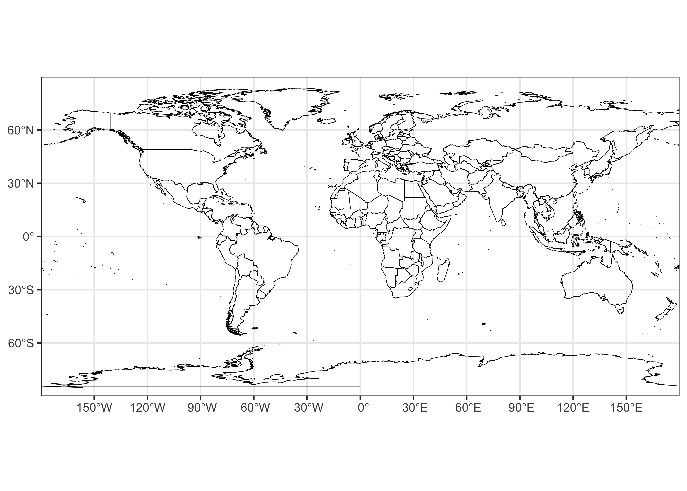
Here’ a plot of some global tree-cover data that will be used later.
First, read in the data, using read_stars() from the
{stars} package to read the netCDF file.
# tree data
tree_path <- "/Users/bartlein/Projects/RESS/data/nc_files/"
tree_name <- "treecov.nc"
tree_file <- paste(tree_path, tree_name, sep="")
tree <- read_stars(tree_file)
tree## stars object with 2 dimensions and 1 attribute
## attribute(s):
## Min. 1st Qu. Median Mean 3rd Qu. Max. NA's
## treecov.nc [1] -2 -1 -1 20.2204 42 80 198720
## dimension(s):
## from to offset delta x/y
## x 1 720 -180 0.5 [x]
## y 1 360 90 -0.5 [y]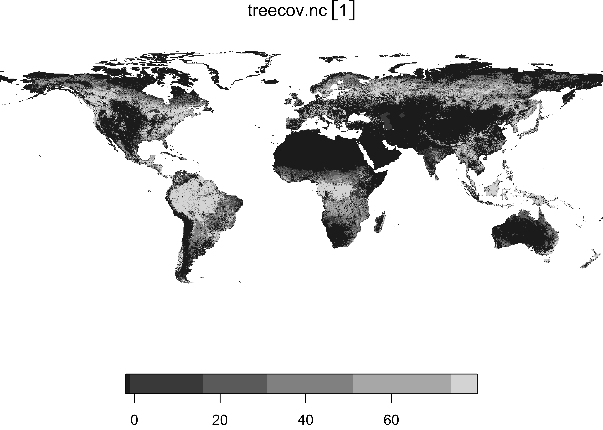
Here’s a {ggplot2} plot of the tree-cover data:
# ggplot2 map of tree
ggplot() +
geom_stars(data = tree) +
scale_fill_gradient(low = "white", high = "darkgreen", na.value = "transparent" ) +
geom_sf(data = world_otl_sf, col = "black", fill = NA) +
scale_x_continuous(breaks = seq(-180, 180, by = 30)) +
scale_y_continuous(breaks = seq(-90, 90, by = 30)) +
coord_sf(xlim = c(-180, +180), ylim = c(-90, 90), expand = FALSE) +
labs(x = "Longitude", y = "Latitude", title="Tree Cover", fill="%") +
theme_bw()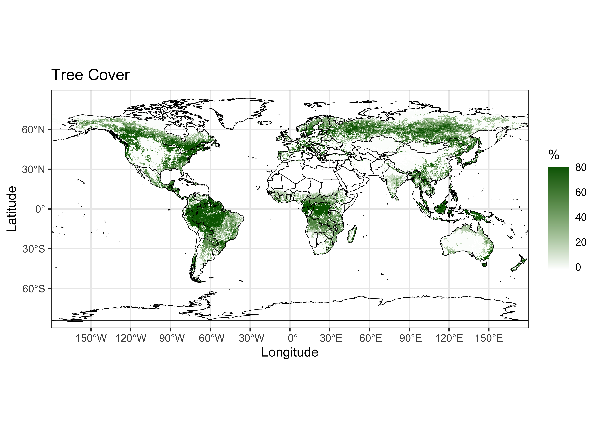
Note that there is a lot going on in the plot, despite the fact that it’s just a single variable and a basemap. As always, the way to see what contribution each function makes to the overall map is to comment it out, and see what happens.
3 Hovmöller diagrams
Hovmöller plots/diagrams, also known as “a climate scientist’s best friend” [Climate.gov], are, as was mentioned, time-space type diagrams, but they are actually just maps of another kind. For example, a (longitude-by-latitude) map of average temperature around the globe is constructed from a raster brick, with dimensions longitude by latitude by time by averaging the data at a particular grid point over time, and then plotting the average at that grid point’s location. A latitude-by-time Hovmöller diagram is constructed by averaging the data over all longitudes at for a particular time and latitude. In practice, Hovmöller diagrams are able to reveal large-scale features in the atmosphere that evolve slowly over time. They are most frequently applied to atmospheric circulation data, or to surface temperature or sea-surface temperature (SSTs). A typical example is the longitude-by-time diagram of tropical SST anomalies (differences from the long-term aveage) used to “diagnose” El Niños and La Niñas [https://psl.noaa.gov/map/images/sst/sst.month.anom.hov.io.gif].
![[https://psl.noaa.gov/map/images/sst/sst.month.anom.hov.io.gif]](https://psl.noaa.gov/map/images/sst/sst.month.anom.hov.io.gif){kind=link}
3.1 A simple example
When constructing a map, say, of average temperatures, it’s relatively easy to imagine what the map should look like, but it’s harder to anticipate what a Hovmöller diagram should look like. (If fact, if a Hovmöller diagram shows any kind of pattern, it signals that there is some systematic variation worth exploring.) So we begin with a simple example.
Read the CRU 0.5-degree 1961-1990 long-term average temperature data.
# set path and filename
ncpath <- "/Users/bartlein/Projects/RESS/data/nc_files/"
ncname <- "cru10min30_tmp"
ncfname <- paste(ncpath, ncname, ".nc", sep="")
dname <- "tmp" # note: tmp means temperature (not temporary)
# stars read of netCDF
tmp_stars <- read_ncdf(ncfname, var=dname)## Will return stars object with 3110400 cells.## No projection information found in nc file.
## Coordinate variable units found to be degrees,
## assuming WGS84 Lat/Lon.Replace the time stamps:
# replace times
#attr(tmp_stars, "dimensions")$time$values <- c(1:12)
attr(tmp_stars, "dimensions")$time$values <- c("Jan","Feb","Mar","Apr","May","Jun",
"Jul","Aug","Sep","Oct","Nov","Dec")Quick plot of the data:
## downsample set to 3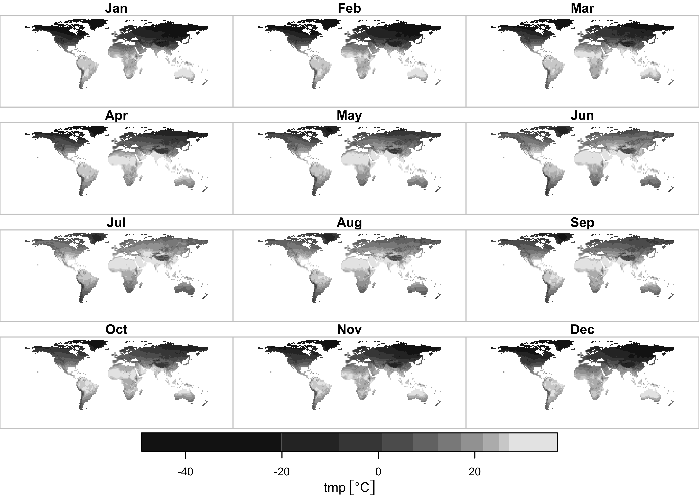
{ggplot2} map of tmp:
# ggplot2 map of tmp
ggplot() +
geom_stars(data = tmp_stars) +
scale_fill_gradient2(low = "darkblue", mid="white", high = "darkred", midpoint = 0) +
geom_sf(data = world_otl_sf, col = "black", fill = NA) +
facet_wrap("time", nrow = 4, ncol = 3) +
scale_x_continuous(breaks = seq(-180, 180, by = 30)) +
scale_y_continuous(breaks = seq(-90, 90, by = 30)) +
coord_sf(xlim = c(-180, +175), ylim = c(-90, 90), expand = FALSE) +
theme_bw() +
theme(strip.text = element_text(size = 6)) + theme(axis.text = element_text(size = 4)) 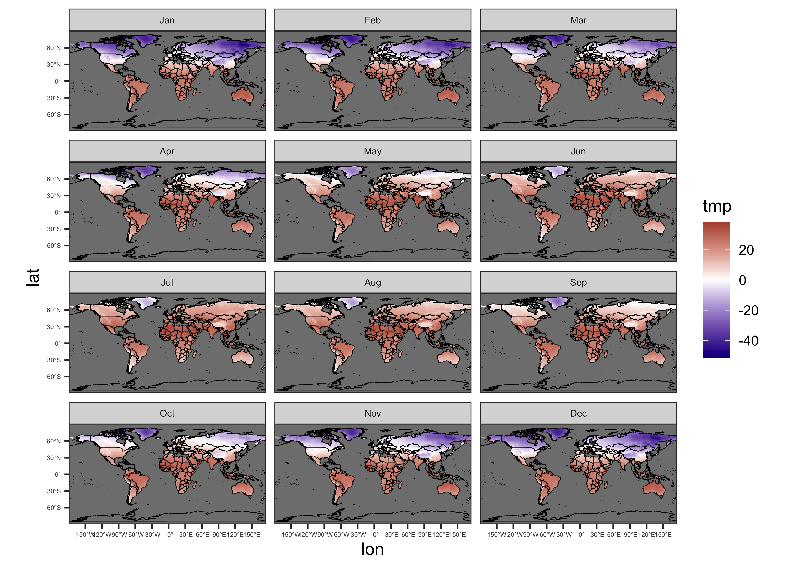
3.2 Test reshaping
Next, we’ll reread the netCDF file to explicitly get the dimension variables, and the data as a 3-D array:
# get the netCDF file
ncin <- nc_open(ncfname)
lon <- ncvar_get(ncin, "lon")
lat <- ncvar_get(ncin, "lat")
tmp_array <- ncvar_get(ncin, dname)
dim(tmp_array)## [1] 720 360 12Next, use the apply() function to get the
longitude-by-time and latitude-by-time averages. The
apply() function, as its name implies, applies some
function to the “margins” of a matrix or array. The arguments of the
apply() function are the name of the array
(tmp_array here), the MARGIN or the subscripts
of the array over which the function will be applied, and the function
(mean in this case, with na.rm = TRUE
indicating that values with missing data should be dropped).
# latitude by time averaging
tmp_hovlat <- apply(tmp_array, c(2,3), mean, na.rm=TRUE)
dim(tmp_hovlat)## [1] 360 12Here’s a quick map of the resulting 2-D array or matrix:
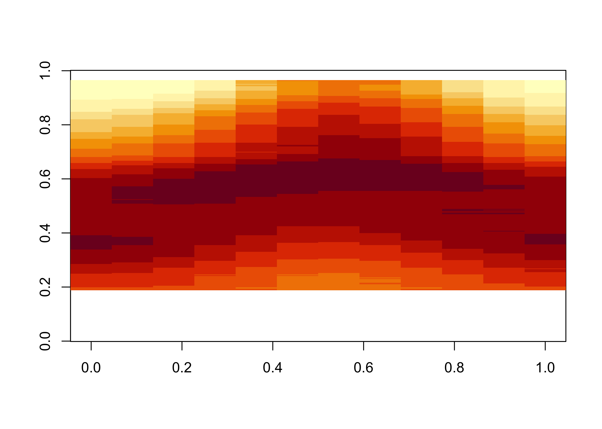
The transpose function (t()) puts time on the x-axis and
latitude on the y-axis. The plot looks like what might be expected.
Here’s longitude by time:
## [1] 720 12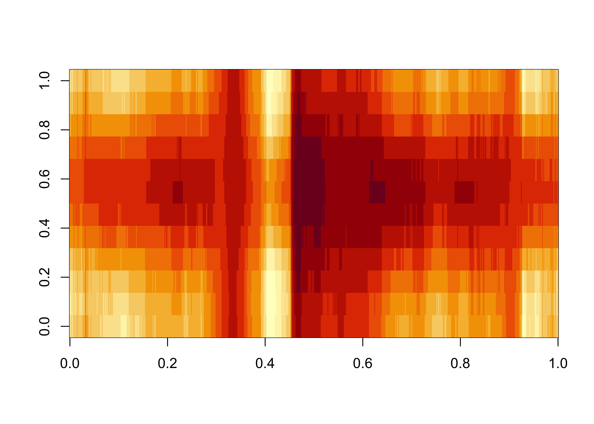
Recalling that this is land data only, and that the longitudes range from -180 to + 180 this plot makes sense–the western margins of the continents are cooler, and the warmest blob in the middle is N. Africa and the Middle East.
3.3 A more complicated example – HadCRUTv5 temperature data
The “HadCRUTv5” data set is one of the four data sets used to describe global and regional temperature variations over the “instrumental period” – since the mid 1800s. The data consist of monthly anomalies (differences from the 1961 to 1990 long-term mean) on a 5-degree grid. The particular data set used here is the statistically “infilled” version, designed to increase the spatial coverage. The data are a combination of the U.K. Met Office Hadley Centre SST data set and the University of East Anglia Climate Research Unit surface air-temperature data. Here are the reference and data-download pages:
- [https://www.metoffice.gov.uk/hadobs/hadcrut5/data/HadCRUT.5.0.2.0/download.html]
- [https://crudata.uea.ac.uk/cru/data/temperature/]
3.3.1 Get and read the HadCRUTv5 data
Get the data:
# get the long-term mean temperature data
# set path and filename
ncpath <- "/Users/bartlein/Projects/RESS/data/nc_files/"
ncname <- "HadCRUT.5.0.2.0.nc"
ncfname <- paste(ncpath, ncname, sep="")
dname <- "tas_mean" # note: tmp means temperature (not temporary), and ...
# we know the data are actually anomalies, not means# get the dimensions from the netCDF file
ncin <- nc_open(ncfname)
lon <- ncvar_get(ncin, "longitude")
nlon <- dim(lon)
lat <- ncvar_get(ncin, "latitude")
nlat <- dim(lat)
time <- ncvar_get(ncin,"time")
tunits <- ncatt_get(ncin,"time","units")
nt <- dim(time)
print(c(nlon, nlat, nt))## [1] 72 36 2088Decode the time variable:
# decode time
cf <- CFtime(tunits$value, calendar = "proleptic_gregorian", time) # convert time to CFtime class
timestamps <- CFtimestamp(cf) # get character-string times
time_cf <- CFparse(cf, timestamps) # parse the string into date components
head(time_cf); tail(time_cf)## year month day hour minute second tz offset
## 1 1850 1 16 12 0 0 00:00 15.5
## 2 1850 2 15 0 0 0 00:00 45.0
## 3 1850 3 16 12 0 0 00:00 74.5
## 4 1850 4 16 0 0 0 00:00 105.0
## 5 1850 5 16 12 0 0 00:00 135.5
## 6 1850 6 16 0 0 0 00:00 166.0## year month day hour minute second tz offset
## 2083 2023 7 16 12 0 0 00:00 63383.5
## 2084 2023 8 16 12 0 0 00:00 63414.5
## 2085 2023 9 16 0 0 0 00:00 63445.0
## 2086 2023 10 16 12 0 0 00:00 63475.5
## 2087 2023 11 16 0 0 0 00:00 63506.0
## 2088 2023 12 16 12 0 0 00:00 63536.5Get the temperature-anomaly data:
Close the input netCDF file
Get the beginning and ending year, and the “decimal” year value for each monthly time step:
# get begining year and ending year
beg_yr <- time_cf$year[1]
end_yr <- time_cf$year[nt]
# "decimal" year for each month
Year <- seq(beg_yr, end_yr+1-(1/12), by=(1/12))
length(Year)## [1] 2088## [1] 1850.000 1850.083 1850.167 1850.250 1850.333 1850.417## [1] 2023.500 2023.583 2023.667 2023.750 2023.833 2023.917Expand and reshape the lons and lats into a vector
## [1] 2592 2## Var1 Var2
## [1,] -177.5 -87.5
## [2,] -172.5 -87.5
## [3,] -167.5 -87.5
## [4,] -162.5 -87.5
## [5,] -157.5 -87.5
## [6,] -152.5 -87.5## Var1 Var2
## [2587,] 152.5 87.5
## [2588,] 157.5 87.5
## [2589,] 162.5 87.5
## [2590,] 167.5 87.5
## [2591,] 172.5 87.5
## [2592,] 177.5 87.53.3.2 Plot a single month
Extract a single month of temperature values, and turn it into a vector:
# vector of `tmp` values
n <- 1957 # should be jan 2013
tmp_vec <- as.vector(tmp_anm_array[,,n])
length(tmp_vec)## [1] 2592Create a vector of temperature-anomaly values;
# vector of `tmp` values
n <- 1957 # should be jan 2013
tmp_vec <- as.vector(tmp_anm_array[,,n])
length(tmp_vec)## [1] 2592Creat a dataframe, and add names:
# create dataframe and add names
tmp_df01 <- data.frame(cbind(lonlat,tmp_vec))
names(tmp_df01) <- c("lon", "lat", "tmp_anm")Get a date label, and set a title for the plot:
pt1 <- paste(as.character(time_cf$year[n]), as.character(time_cf$month[n]), sep = "-")
title <- "HadCRUTv5 -- Temperature Anomalies (℃)"Plot the single-month data:
# ggplot2 map of tmp
ggplot() +
geom_tile(data = tmp_df01, aes(x = lon, y = lat, fill = tmp_anm)) +
scale_fill_gradient2(low = "darkblue", mid="white", high = "darkred", midpoint = 0) +
geom_sf(data = world_otl_sf, col = "black", fill = NA) +
scale_x_continuous(breaks = seq(-180, 180, by = 30)) +
scale_y_continuous(breaks = seq(-90, 90, by = 30)) +
coord_sf(xlim = c(-180, 180), ylim = c(-90, 90), expand = FALSE) +
labs(title=title, subtitle=pt1, fill="Anomalies") +
theme_bw() + theme(legend.position="bottom")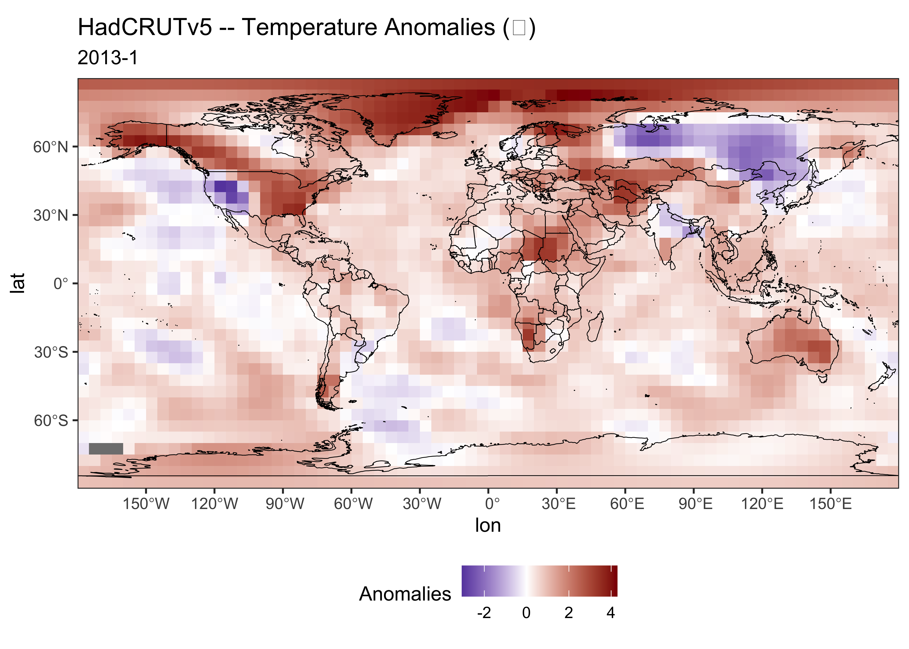
Compare this map to one generated in Panoply for Jan 2013.
3.3.3 Shift longitudes
The longitudes of HadCRUTv5 data as read in range from -180 to + 180,
sometimes called the “Atlantic perspective” (as can be verified by
inspection of the longitude minimum and maximum
(e.g. min(lon) and max(lon)). However, in many
applications, longitude-by-time Hovmöller diagrams with the longitude
origin at the Prime Meridian are preferred, to place the Pacific in the
center (i.e. the “Pacific perspective). There are two ways to shift
(sometimes called”rotate”) the longitudes (and the data). One way is to
do it externally to R, using for example the Climate Data Operators. The
CDO code for doing so in this case is
## run in a Terminal/CMD window, not in R
## cdo sellonlatbox,0,360,-90,90 HadCRUT.5.0.2.0.nc HadCRUT.5.0.2.0_pac.ncwhere HadCRUT.5.0.2.0_pac.nc is the shifted data
set.
Alternatively, the data can be shifted “internally”:
## [1] -177.5 -172.5 -167.5 -162.5 -157.5 -152.5 -147.5 -142.5 -137.5 -132.5 -127.5 -122.5 -117.5 -112.5
## [15] -107.5 -102.5 -97.5 -92.5 -87.5 -82.5 -77.5 -72.5 -67.5 -62.5 -57.5 -52.5 -47.5 -42.5
## [29] -37.5 -32.5 -27.5 -22.5 -17.5 -12.5 -7.5 -2.5 2.5 7.5 12.5 17.5 22.5 27.5
## [43] 32.5 37.5 42.5 47.5 52.5 57.5 62.5 67.5 72.5 77.5 82.5 87.5 92.5 97.5
## [57] 102.5 107.5 112.5 117.5 122.5 127.5 132.5 137.5 142.5 147.5 152.5 157.5 162.5 167.5
## [71] 172.5 177.5# shift lons
lontemp <- lon
lon[1:(nlon/2)] <- lontemp[((nlon/2)+1):nlon] # new 0 to + 180 values
lon[((nlon/2)+1):nlon] <- lontemp[1:(nlon/2)] + 360.0 # new 180 to 360 values## [1] 2.5 7.5 12.5 17.5 22.5 27.5 32.5 37.5 42.5 47.5 52.5 57.5 62.5 67.5 72.5 77.5
## [17] 82.5 87.5 92.5 97.5 102.5 107.5 112.5 117.5 122.5 127.5 132.5 137.5 142.5 147.5 152.5 157.5
## [33] 162.5 167.5 172.5 177.5 182.5 187.5 192.5 197.5 202.5 207.5 212.5 217.5 222.5 227.5 232.5 237.5
## [49] 242.5 247.5 252.5 257.5 262.5 267.5 272.5 277.5 282.5 287.5 292.5 297.5 302.5 307.5 312.5 317.5
## [65] 322.5 327.5 332.5 337.5 342.5 347.5 352.5 357.5# shift data
temp_array <- tmp_anm_array # note "temp" means temporary, "tmp" means temperature
tmp_anm_array[1:(nlon/2),,] <- temp_array[((nlon/2)+1):nlon,,]
tmp_anm_array[((nlon/2)+1):nlon,,] <- temp_array[1:(nlon/2),,]For very large data sets, it may be prohibitive to create the temporary arrays, but the same strategy for shifting the data can be applied while reading the data in:
# # rotate data while reading...
# # get the west half of the new array
# tmp_anm_array <- array(NA, c(nlon, nlat, nt))
# tmp_anm_array[1:(nlon/2),,] <- ncvar_get(ncin, dname, start = c(((nlon/2)+1), 1, 1), count = c(nlon/2, nlat, nt))
# # get the east half
# tmp_anm_array[((nlon/2)+1):nlon,,] <- ncvar_get(ncin, dname, start = c(1, 1, 1), count = c(nlon/2, nlat, nt))Make a second dataframe with the shifted longitudes and data:
## [1] 2592 2## Var1 Var2
## [1,] 2.5 -87.5
## [2,] 7.5 -87.5
## [3,] 12.5 -87.5
## [4,] 17.5 -87.5
## [5,] 22.5 -87.5
## [6,] 27.5 -87.5## Var1 Var2
## [2587,] 332.5 87.5
## [2588,] 337.5 87.5
## [2589,] 342.5 87.5
## [2590,] 347.5 87.5
## [2591,] 352.5 87.5
## [2592,] 357.5 87.5# vector of `tmp` values
n <- 1957 # should be jan 2013
tmp_vec <- as.vector(tmp_anm_array[,,n])
length(tmp_vec)## [1] 2592# create a dataframe and add names
tmp_df02 <- data.frame(cbind(lonlat,tmp_vec))
names(tmp_df02) <- c("lon", "lat", "tmp_anm")Get a shifted world outline map using the {maps} package
and its world2 database:
## Simple feature collection with 253 features and 1 field
## Geometry type: MULTIPOLYGON
## Dimension: XY
## Bounding box: xmin: 0 ymin: -89.99001 xmax: 360 ymax: 83.59961
## Geodetic CRS: +proj=longlat +ellps=clrk66 +no_defs +type=crs
## First 10 features:
## ID geom
## Aruba Aruba MULTIPOLYGON (((290.1009 12...
## Afghanistan Afghanistan MULTIPOLYGON (((74.89131 37...
## Angola Angola MULTIPOLYGON (((23.9665 -10...
## Anguilla Anguilla MULTIPOLYGON (((296.9988 18...
## Albania Albania MULTIPOLYGON (((20.06396 42...
## Finland Finland MULTIPOLYGON (((20.61133 60...
## Andorra Andorra MULTIPOLYGON (((1.706055 42...
## United Arab Emirates United Arab Emirates MULTIPOLYGON (((53.92783 24...
## Argentina Argentina MULTIPOLYGON (((295.4508 -5...
## Armenia Armenia MULTIPOLYGON (((45.55235 40...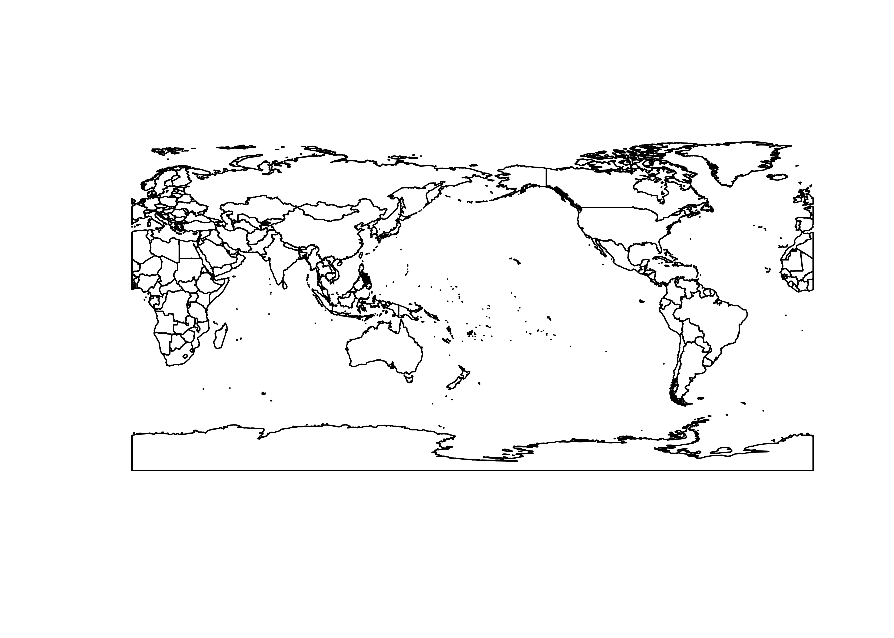
{ggplot2} map of the longitudinally shifted data:
# ggplot2 map of tmp
ggplot() +
geom_tile(data = tmp_df02, aes(x = lon, y = lat, fill = tmp_anm)) +
scale_fill_gradient2(low = "darkblue", mid="white", high = "darkred", midpoint = 0) +
geom_sf(data = world2_otl_sf, col = "black", fill = NA) +
scale_x_continuous(breaks = seq(0, 360, by = 30)) +
scale_y_continuous(breaks = seq(-90, 90, by = 30)) +
coord_sf(xlim = c(0, 360), ylim = c(-90, 90), expand = FALSE) +
labs(title=title, subtitle=pt1, fill="Anomalies") +
theme_bw() + theme(legend.position="bottom")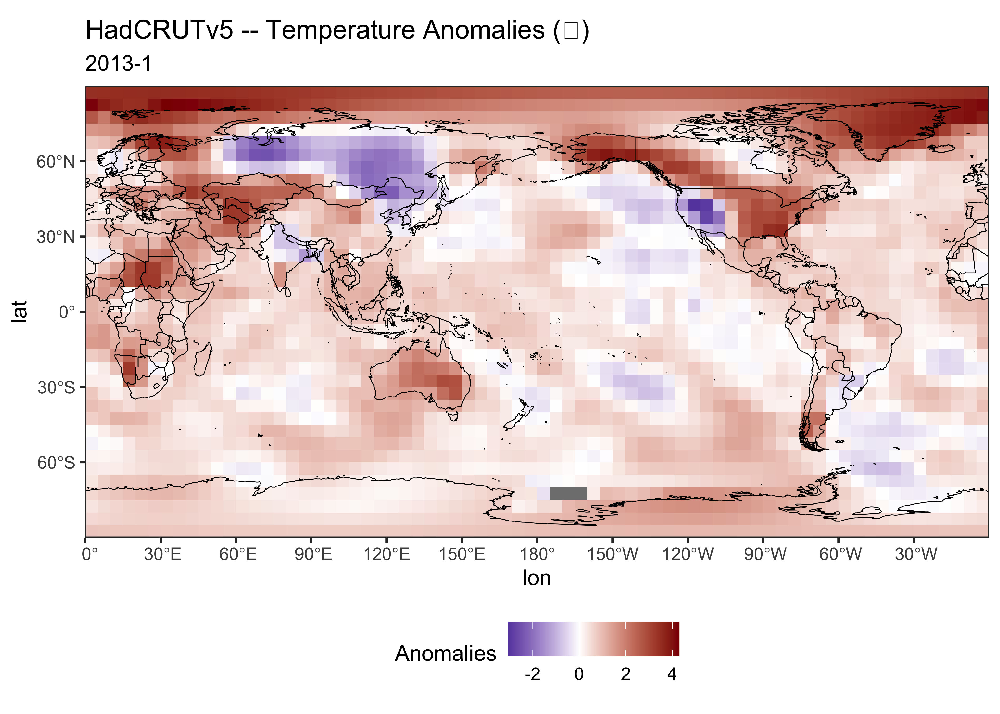
3.3.4 Hovmöller diagrams
Get the latitude by time matrix, as before
# latitude by time array of means
tmp_hovlat <- apply(tmp_anm_array, c(2,3), mean, na.rm=TRUE)
dim(tmp_hovlat)## [1] 36 2088Make a dataframe:
## [1] 75168 2## Var1 Var2
## [1,] 1850.000 -87.5
## [2,] 1850.083 -87.5
## [3,] 1850.167 -87.5
## [4,] 1850.250 -87.5
## [5,] 1850.333 -87.5
## [6,] 1850.417 -87.5## Var1 Var2
## [75163,] 2023.500 87.5
## [75164,] 2023.583 87.5
## [75165,] 2023.667 87.5
## [75166,] 2023.750 87.5
## [75167,] 2023.833 87.5
## [75168,] 2023.917 87.5## [1] 75168# create dataframe and add names
hovlat_df01 <- data.frame(cbind(lattime,hovlat_vec))
names(hovlat_df01) <- c("Year", "lat","tmp_anm")
head(hovlat_df01); tail(hovlat_df01)## Year lat tmp_anm
## 1 1850.000 -87.5 NaN
## 2 1850.083 -87.5 NaN
## 3 1850.167 -87.5 NaN
## 4 1850.250 -87.5 NaN
## 5 1850.333 -87.5 NaN
## 6 1850.417 -87.5 NaN## Year lat tmp_anm
## 75163 2023.500 87.5 0.2319301
## 75164 2023.583 87.5 1.5546526
## 75165 2023.667 87.5 3.3831206
## 75166 2023.750 87.5 5.4075364
## 75167 2023.833 87.5 4.6620130
## 75168 2023.917 87.5 6.4446236## Year lat tmp_anm
## Min. :1850 Min. :-87.50 Min. :-6.391
## 1st Qu.:1893 1st Qu.:-43.75 1st Qu.:-0.411
## Median :1937 Median : 0.00 Median :-0.118
## Mean :1937 Mean : 0.00 Mean :-0.030
## 3rd Qu.:1980 3rd Qu.: 43.75 3rd Qu.: 0.260
## Max. :2024 Max. : 87.50 Max. : 8.959
## NA's :5713## [1] 75168 2## Var1 Var2
## [1,] 1850.000 -87.5
## [2,] 1850.083 -87.5
## [3,] 1850.167 -87.5
## [4,] 1850.250 -87.5
## [5,] 1850.333 -87.5
## [6,] 1850.417 -87.5## Var1 Var2
## [75163,] 2023.500 87.5
## [75164,] 2023.583 87.5
## [75165,] 2023.667 87.5
## [75166,] 2023.750 87.5
## [75167,] 2023.833 87.5
## [75168,] 2023.917 87.5## [1] 75168# create dataframe and add names
hovlat_df01 <- data.frame(cbind(lattime,hovlat_vec))
names(hovlat_df01) <- c("Year", "lat","tmp_anm")
head(hovlat_df01); tail(hovlat_df01)## Year lat tmp_anm
## 1 1850.000 -87.5 NaN
## 2 1850.083 -87.5 NaN
## 3 1850.167 -87.5 NaN
## 4 1850.250 -87.5 NaN
## 5 1850.333 -87.5 NaN
## 6 1850.417 -87.5 NaN## Year lat tmp_anm
## 75163 2023.500 87.5 0.2319301
## 75164 2023.583 87.5 1.5546526
## 75165 2023.667 87.5 3.3831206
## 75166 2023.750 87.5 5.4075364
## 75167 2023.833 87.5 4.6620130
## 75168 2023.917 87.5 6.4446236## Year lat tmp_anm
## Min. :1850 Min. :-87.50 Min. :-6.391
## 1st Qu.:1893 1st Qu.:-43.75 1st Qu.:-0.411
## Median :1937 Median : 0.00 Median :-0.118
## Mean :1937 Mean : 0.00 Mean :-0.030
## 3rd Qu.:1980 3rd Qu.: 43.75 3rd Qu.: 0.260
## Max. :2024 Max. : 87.50 Max. : 8.959
## NA's :5713{ggplot2} version of the Hovmöller diagram
# ggplot2 Hovmöller plots -- Year x Latitude
ggplot() +
geom_tile(data = hovlat_df01, aes(x = Year, y = lat, fill = tmp_anm)) +
scale_x_continuous(breaks = seq(1850, 2025, 25)) +
scale_y_continuous(breaks = seq(-90, 90, 30)) +
scale_fill_distiller(palette = "RdBu", limits = c(-4, 4)) +
labs(title=title, y = "Latitude", fill="Anomalies") +
theme_bw() + theme(aspect.ratio = 2/4)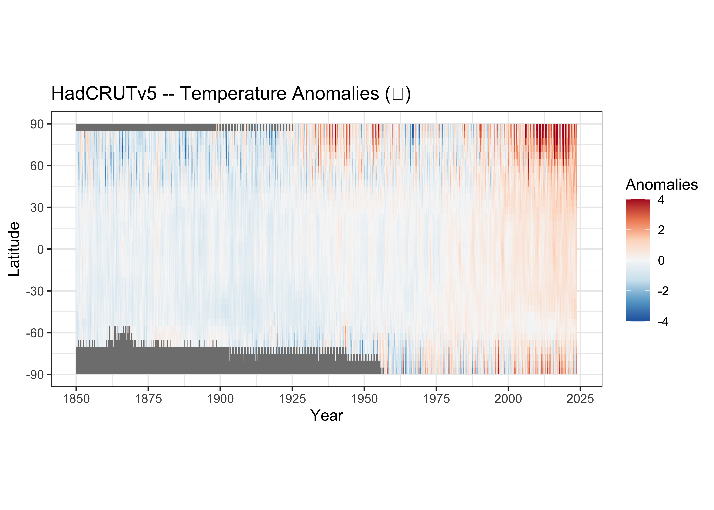
The theme(aspect.ratio = 2/4) function changes the
aspect ratio of the plot to more of “landscape” orientation.
Here’s the longitude by time array:
# longitude by time array of means
tmp_hovlon <- apply(tmp_anm_array, c(1,3), mean, na.rm=TRUE)
dim(tmp_hovlon)## [1] 72 2088Make a dataframe:
## [1] 150336 2## Var1 Var2
## [1,] 1850.000 2.5
## [2,] 1850.083 2.5
## [3,] 1850.167 2.5
## [4,] 1850.250 2.5
## [5,] 1850.333 2.5
## [6,] 1850.417 2.5## Var1 Var2
## [150331,] 2023.500 357.5
## [150332,] 2023.583 357.5
## [150333,] 2023.667 357.5
## [150334,] 2023.750 357.5
## [150335,] 2023.833 357.5
## [150336,] 2023.917 357.5## [1] 150336# create dataframe and add names
hovlon_df01 <- data.frame(cbind(lontime,hovlon_vec))
names(hovlon_df01) <- c("Year", "lon","tmp_anm")
head(hovlon_df01); tail(hovlon_df01)## Year lon tmp_anm
## 1 1850.000 2.5 -0.950341235
## 2 1850.083 2.5 -0.390168492
## 3 1850.167 2.5 -0.761444672
## 4 1850.250 2.5 0.005601682
## 5 1850.333 2.5 -0.498775441
## 6 1850.417 2.5 -0.440165867## Year lon tmp_anm
## 150331 2023.500 357.5 1.434794
## 150332 2023.583 357.5 1.243911
## 150333 2023.667 357.5 1.381988
## 150334 2023.750 357.5 1.366564
## 150335 2023.833 357.5 1.372685
## 150336 2023.917 357.5 1.214881## Year lon tmp_anm
## Min. :1850 Min. : 2.50 Min. :-3.97863
## 1st Qu.:1893 1st Qu.: 91.25 1st Qu.:-0.43266
## Median :1937 Median :180.00 Median :-0.08804
## Mean :1937 Mean :180.00 Mean :-0.04036
## 3rd Qu.:1980 3rd Qu.:268.75 3rd Qu.: 0.32450
## Max. :2024 Max. :357.50 Max. : 2.90718
## NA's :297And the Hovmöller diagram:
# ggplot2 Hovmöller plots -- Year x Longitude
ggplot() +
geom_tile(data = hovlon_df01, aes(x = lon, y = Year, fill = tmp_anm)) +
scale_x_continuous(breaks = seq(0, 360, 30)) +
scale_y_continuous(breaks = seq(1850, 2025, 25), trans = "reverse") +
scale_fill_distiller(palette = "RdBu", limits = c(-4, 4)) +
labs(title=title, x = "Longitude", fill="Anomalies") +
theme_bw() + theme(aspect.ratio = 4/3)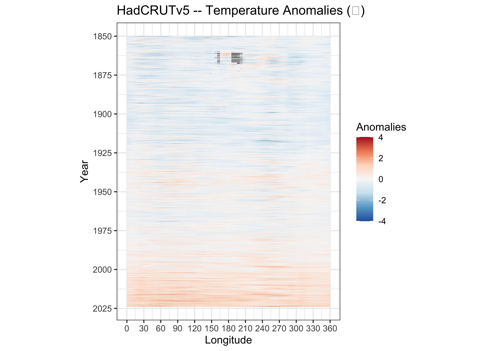
{ggplot2} Hovmöller diagrams